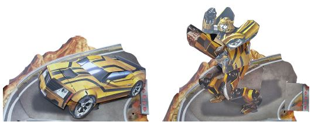
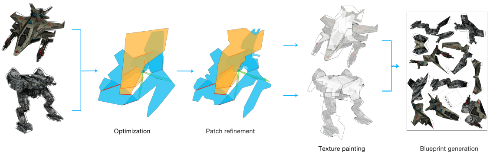

Computational Design and Fabrication
Inspired by the previous research of pop-ups from the Graphics and Geometric Computing Group at Tsinghua University, I proposed the idea of the computational design of transforming pop-ups and was advised by Professor Shi-min Hu and Professor Kun Xu. I was drawn towards the interesting nature of this problem and its potential for yielding new knowledge. Starting from scratch, I spent a month studying the principles behind it, and then analyzed the geometric properties used in transforming pop-ups. Based on this investigation, a novel mathematical model was built by integrating knowledge from mechanical engineering and geometry. I led the project team that developed the first computational design tool to help novice users create transforming pop-ups.
Question Posing
Not only children but also adults love transforming pop-up books because of its surprising and playful mechanisms. To find out how to build the structure of it, we analyzed the mechanisms used in “Transformers: The Ultimate Pop-up Universe” and defined several properties of transforming pop-up:
- Every structure consists of a pull-tab, a ground patch, and several basic 4R linkage mechanisms.
- Every structure has only one DoF, which guarantees it could transform into a specified shape.
- The structure is foldable at both initial state and ending state of transformation.
- No collisions during the transformation process.
After listing above properties, we posed the question that is how to automatically generate a structure that has above properties and can transform between two patterns and shapes.
Question Decomposition
The question could be decomposed into several sub-questions, which helps us to solve it step by step.
1. Which kind of mechanisms can be used in transforming pop-up structures?
There are three basic mechanisms based on the 4R linkages could be used in the structures: parallel mechanism, V-fold mechanism, and slide mechanism. There are also three kinds of functional elements: extended patch, ground patch and pull-tab.
2. How could we build a structure using these mechanisms?
Three types of linkages, including hinge linkage, extended patch linkage, and slide linkage, are used in transforming pop-up structure to transmit movement from one mechanism to another, and the link relations can be naturally described as a tree structure.
3. How could we ensure the structure only has one DoF and without collisions?
The number of DoF can be proved by using Kutzbach-Gruebler Equation, and the proof details could be found in the supplemental material of our paper. We use a hard constraint to ensure the mechanisms remain collision-free when generating the structure.
4. How could we measure the change of pattern textures?
We observe that pattern texture could change due to face flipping or covering, so we introduce the flip term to measure that all regions change into target pattern.
5. How could we measure the change of shape?
The movements of mechanisms provide the shape change, so we introduce shape term to accounts for how well the pop-up in the untransformed and transformed states match the shapes of the user given source and target patterns.
Proposing Solutions
 By answering these sub-questions, it is much more clear that what kind of methods can be used in the solution. Our overall algorithm has four steps: an optimization step, a patch refinement step, a texture painting step, and a blueprint generation step. Details could be found in Section 4 in our paper.
Results
Some results are given here. We also gave the evaluation which could be found in Section 5 in our paper.